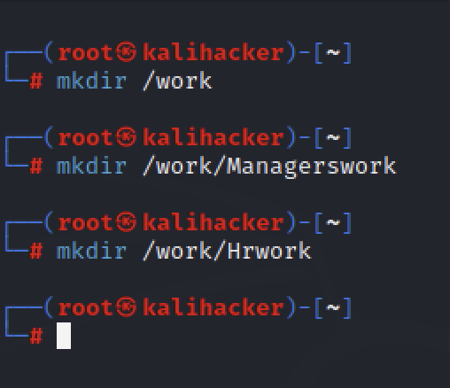

CyberSecurity
Learn CySA+
How to Brute force discover someone password using John the Ripper in Linux?
-
on your terminal navigate to root directory using this command: sudo su - If promted for password enter your computer password 
-
on the root create a file where you saved the list of passowrd you will use to attempt brake the computer 
-
Run this dictionary.txt file against user computer using john the Ripper Make sure you have john the ripper installed on you computer using this command: john --format=crypt dictionary.txt /etc/shadow If the password exist it will return username and password 
How to add a new user in windows?
How to add a new user in Linux using terminal?
How to disable an administrator account when a adim leave a company?
-
Use the windows Server 5016/5019 CMD tool to disable the user account "C:\Users\Administrator >net user username/active: no" -
Use the Windows Server 5016/5019 CMD too to change the Administrator password for the file server(s). "C:\Users\Administrator> net user administrator newPassword
File Manipulation
The cat Command
The Linux cat command allows you to view the contents of one or more files.The head and tial Commands
The logger Command
Grep Command
Ports
- LDAP: port 389
- LDAPS: port 636
- NTP: UDP on Port 123
- SNMP: UDP on Port 161 & 162
- HTTP: TCP port 80
- HTTPS: port 443
- SSL: port 465
- TLS/STARTTLS: port 587
- IMAPS Port 993
- SSH use Custom server port 22
Linux Commands
whois => can be used to lookup domain registration information to try to detect misuse in other cases.
Example: "whois google.com"
pwd => Report the full path to the current directory

ip a s etch0 => shows the network adapter configuration
hostname=> dysplay the system's name.
hosname i => To display the host Ip address
nmap -A <ipaddress> To display all the open ports on the computer.
SSH Commands
SSH commands are used to connect to hosts and set up authentication methods.
To connect to an SSH server at 10.1.0.10 using an account named "bobby" and password authentication, run:
ssh booby@10.1.0.10
The following commands create a new key pair and copy it to an account on the remote server
ssh-keygen -t rsa
ssh-copy-id boby@10.1.0.10
In an SSH prompt use the standart Linux shell commands.
exit
You can also use the scp commando to copy a file from the remote server to the local host:
scp booby@10.1.0.10:/logs/audit.log audit.log
Reverse the argumens to copy a file from the local host to the remote server. To copy contents
of a directory and any subdirectories (recursively), use the -r option.
sudo lsof -i -n -p | grep LISTEN
Windows Commands
-
mkdir fileName -> to create a new folder.
Linux Managing Access Controls
How to manage access controls on a Linux server.
To do this open your linux terminal make sure you login as root.
run this command to login as root in your terminal
"sudo su -" if prompt for passowrd enter your password
Create users and password
To create a user run this command: "useradd username"
To create the user password run this command: "passwd username"
Example:
- user 1:
"useradd Lilica" press enter
"passwd Lilica" press enter
- user 2:
"useradd Nair" press enter
"passwd Nair" press enter
Note: if you see password do not match error just re-type the "passwd username" command
- user 3:
"useradd Caio" press enter
"passwd Caio" press enter
- user 4:
"useradd Ivair" press enter
"passwd Ivair" press enter
-
If you want to remove a user run this command: "userdel username
Example:
let's create a new username "test" and remove him"
"useradd test" press enter
"passwd test" press enter
"userdel test" press enter
Create groups -
"groupadd managers" press enter
- "groupadd hr" press enter
To create a group run the following command: groupadd groupname
Example: let's create two groups with the name "managers and hr"
Adding the users to groups
Run this command to add this add user to a group: usermod -aG group_name username
Example: adding Lilica and Nair to managers group and Caio and Ivair to hr group
"usermod -aG managers Lilica" press enter
"usermod -aG managers Nair" press enter

"usermod -aG hr Caio" press enter
"usermod -aG hr Ivair" press enter
Run this commands to verify the group memberships: "id username"
Example: check the what group each user belong
"id Lilica Nair Caio Ivair" press enter
Run the tail command to displays the last 10 lines of a file. In this case it displays the most
the most recently-created groups: "tail /etc/group"
Example: "tail /etc/group" press enter
Create directories and files
Use the mkdir and touch commands to create directories and files to simulate resources that need to have
permissions applied to them.
- Run the following commands to create 3 directories:
mkdir /work
mkdir /work/Managerswork
mkdir /work/Hrwork
 - Run the "touch" command. The touch command updates the timestamp on an existing file
If the specified file does not exist, thouch creates it.
Example: Create "employees" list file into managerswork folder and "new hire" file into the hr folder.
"touch /work/Managerwork/employees.txt"
"touch /work/hrwork/newhire.txt"
Ownership Configurations
By default, who creates a resource owns the resource. We used the root user account to create the directories and files
the root user controls access. So we need to permit users and groups to own the directories and files so that they can
configure permissions.
-
Run "ls -ld /work" to display the default permissions on the contents of that directory
Exmaple: "ls -d /work" press enter
-
Run "chown -R username:groupname /directory name/subdirectory name" cammand to change the ownership
from root to specific users and group
Example:
"chown -R Lilica:managers /work/Managerswork " press enter
"chown -R Caio:hr /work/Hrwork" press enter
Note: -R option makes the chown recursive. This applies the ownership and groups settings
to the directory and everything in it.
-
Run "ls -ld /work/Managerswork" and "ls -ld /work/Hrwork" to display the new ownership
-
Run "ls -l /work/Managerswork" and "ls -l /work/Hrwork" to dysplay the user and group associations for the contents
of these dircetories.
Example:
Permission Configurations
Use "chmod" cammand in sysmbolic mode to configure permissions for the resource owner, the associated group, and all others.
Syntax example: chmod go+rw file1 adds (+) read and write (rw) to the group and others (go).

Windows Server Managing Access Control
Run this command "woami /user " to display the Security ID (SID)
Example:
Run get-aduser cmdlet to display account information
"get-aduser -identity administrator -properties *"
Example:
Manage user, group, and computer objects
Active Directory stores and manages objects that represent common entities,
user acounts or computers.
-
Open Server Manager click -> Tools menu, -> select Active Directory Users and Computers
-
Right-click in the domain name "dintenquedeveloper.com" -> seclect New then -> Organizational Unit
Note: Microsoft differentiates between the terms container and organizational unit. An Organizatinal Unit (OU)
can have Group Policy Object linked to it, (GPO) which results in it being easier and more flexible to manage.
Containers cannot have linked GPOs and are not typically used for day-to-day Active Directory (AD) administration.
-
Right-click in the Organizational unit folder you just created "Developers" -> select New
-> select User Follow the directions to create a new user.
-
Create a global security group inside the "Developers" Organizational Unit (OU).
Right click in Developers -> New and click Group make sure Gobal and Security radio box are check
-
Then Add the new the user to the security group you just created by right click in user
-> and click in Add to a group and write the group name. in the box. -> click ok
-
Create new computers organizational Unit object. Righ click the Domain name -> New ->
Organizational Unit-> then write your computer (OU) name. -> then click OK
- Create a new computer account name. Right click in the computer organizational Unit name you created
-> then select New -> Computer and create new laptop name. -> then click Ok
-
To generate a report of all computer objects in the domain.
Run this command: get-adcomputer -filter * | out-file C:\textfile.txt and then enter
Modify an existing Group Policy (GPO) to match password requirements
Open Server Manager-> Tool -> Group Policy Management-> expand Forest -> Domains ->
expand your domain name -> right click in Default Domain Policy -> Edit -> Computer Configuration ->
Policies -> Windows Settings -> Security Settings-> Account Policies -> double click in Password Policy
Click in each policy to make change as you wish.
After you finished. run powerShell window as administrator. To produce a report of the password
policy settings to updating configuration documentation:
Run this command: gpresult /H C:\passwords-gpresults.html
-
Open Server Manager -> Tools from the list select -> Group Policy Management -> expand Forest -> expand Domains
-> expand your Domain name -> right click in Default Domain Policy-> select Edit -> expand Computer Configuration ->
expand Policies -> expand Windows Settings -> expand Security Settings -> expand Local Policies -> click in Security Options
-
Double click in either one of those to enable or disable
- Accounts: Guest account status
- Interactive logon: Don't display last signed-in
- Interactive logon: Message text for users attempting to log on
- Interactive logon: Massage title for users attempting to log on
- Interactive logon: Do not require CTRL+ALT+DEL
gpupdate /force
then run this one
gpresult /H C:\Users\Administrator\Desktop\GPreport.htm
How to Enabled or Disabled Guest account, display or not display the user name of the last user to log on, also, how to display a title and message on a server, or how to not require CTRL+ALT+DEL ?
A number of network appliances are involved in provisioning a network architecture:
Firewall

DNS Client Cache Poisoning


How do I run a host file?
TLS Handshake
List of words used in cyberSecurity and meanings
CA: Certificate Authority
PKI: Public Key Infrastructure
TPM: Trusted Platform Module
IdP: Identity Provider
IAM: Identity Access Management
NDA: Nondisclosure Agreement
SOPs: Standard Operating Procedures
ACL: Access Control List
MFA: Multifactor Authentication
SSH: Secure Shell
API: Application Programming Interface
SID: security identifier
GPOs: Group Policy Objects
OU: Organizational Units
AD: Active Directory
ISP: Internet Service Provider
OS:Operating System
GPS: Global Positioning System
SOPs: Standard Operating Procedures
DAC: Discretionary Access Control
RBAC: Role-Base Access Control
ACE: Acces Control Entry
MAC: Media Access Control
ABAC: Attribute-Based Access Control
PAM: Prvileged Access Management
CN: Common Name
OU: Organizational Unit
LDAP: Lightweight Directory Access Protocol
DN: Domain Name
CRM: Customer Relationship Management
NIST: National Institute of Standards and Technology
DNS: Domain Name System
FQDNs: Fully Qualified Domain names
OSI: Open Systems Interconnection
WAP: Wireless Access Point
IP: Internet Protocol
TCP: Transport Control Protocol
UDP: User Datagram Protocol
ARP: Address Resolution Protocol
BGP: Border Gateway Protocol
OSPF: Open Shortest Path First
EIGRP: Enhanced Interior Gateway Routing Protocol
RIP: Routing Intormation Protocol
VPN: Virtual Private Network
DMZ: Demilitarized Zones
CDNs: Content Delivery Network
BYOD: Bring YOur Own Device
MiTM: Man-in-the-Middle
BPDU: Bridge Protocol Data Unit
DP: Designated Ports
RP: Root Ports
DHCP: Dynamic Host Configuration Protocol
loT: Internet of Things
NAC: Network access control
AAA: Authentication, Authorization, Accounting
IOS: Internetwork Operating System
IDS: Intrusion Detection System
BSSID: Basic Service Set Identifier
CCI: Co-channel Interference
Adjacent channel Interference
WPA: Wi-Fi Protected Access
WEP: Wired Equivalent Privacy
TKIP: Temporal Key Integrity Protocol
GCMP: Gaalois Counter Mode Protocol
SAE: Simultaneous Authentication Equal
AES: Advanced Encryption Standard
SOC: Security Operations Center
DevOps: Development and Operations
PMK: Pairwise Master
MK: Master Key
EAP: Extensible Authentication Protocol
MFP: Management Frame Protection
IV: Initialization Vector
DoS: Denial of Service
DDoS: Distributed Denial of Service
DRDoS: Distributed Relection Denial of Service
NTP: Network Time Protocol
OT: Operation Technology
BGP: Border Geteway Protocol
CARP: Common Address Redundancy Protocol
A/P: Active/Passive
A/A: Active/Active
FIFO: First In First Out
QoS: Quality of Service
CoS: Class of Service
NOS: Network Operating System
NAT: Network Address Translation
NAPT: Network Address Port Translation
IDS: Intrusion Detection System
NIDS: Network-based Intrusion Detection System
TAP: Test Access Point
SPAN: Switched Port Analyzer
IPS: Intrusion Prevention System
DLP: Data Loss Prevention
CASB: Cloud Access Security Brokers
UTM: Unified Threat Management
IPS: Intrusion Prevention System
NGFW: Next Generation Firewall
HIDS: Host-Based Intrusion Detection System
FIM: File Integrity Monitoring
sfc: System File Checker
WAF: Web Application Firewall
SNMP: Simple Network Management Protocol
SIEM: Security Information Event Management
SOAR: Security Orchestration Automation Response
UEBA: User Entity Behavior Analytics
IOC: Indicator Of Compromise
regex: Regular Expressions
DHCP: Dynamic Host Configuration Protocol
URL: Uniform Resource Locator
BIND: Berkeley Internet Name Domain
isc: Internet, Software Consortium
LDAP: Lightweight Directory Access Protocol
SASL: Simple Authentication Security Layer
LAN: Local Area Network
SNMP: Simple Network Management Protocol
MIB: Management Information Base
HTTP: HyperText Transfer Protocol
HTML: HyperText Markup Language
SSL: Secure Sockets Layer
TLS: Transport Layer security
GCM: Galois Counter Model
HKDF: Hash Key Derivation Function
RSS: Really Simple Syndication
SSO: Single Singn On
IMAP Internet Message Access Protocol
OOB: Out-of-band
SAWs Secure Admin Workstations
SFTP: Secure File Transfer Protocol
NOS: Network Operating System
SPN: Service Principal Name
RoT: Hardware Root of Trust
KMIP: Key Management Interoperability Protocol
UEFI: Unified Extensible Firmware Interface
PCRs: Platform Configuration Registers
KEK: Key Encryption Key
SED: Self-Encrypting Drivers
FDE: Full Disk Encryption
HDDs: Hard Disk Drivers
SSDs: Solid State Drivers
OEMs Original Equipment Manufacturers
EOL: End of Life
EOSL: End of Service Life
MSA: Measurement Systems Analysis
SLA: Service Level Agreement
BPA: Business Partnership Agreement
MOU: Memorandum Of Understanding
MBSA: Microsoft Baseline Security Analyzer
HIPS: Host-Based Intrusion Prevention Systems
CME: Common Malware Enumeration
RTOS: Real-Time Operating Systems
ASICs: Application-Specific Integrated Circuits
FPGA: Field Programmable Gate Array
SoC: System on Chip
PLC: Programmable Logic Controller
LTE: Long Term Evolution or 4G
NB-loT Narrowband-loT
SIM: subscriber identity module
HVAC: Heating, Ventilation, Air, Conditioning
SCADA: Supervisory, Control, and, Data, Acquisition
HMIs: Human-machine Interfaces
DCS: Distributed Conrol System
ICSs: Industrial Control Systems
M2M: Machine to Machine
PACS: Physical Access Control System
XSS: Cross-site Scripting
BAS: Building Automation System
VoIP: Voice Over IP
MFPs: Multifunction Printers
UAV: Unmanned aerial Vehicles
ECU: Electronic Control Unit
CAN: Conroller Area Network
OBD-II Onboard Diagnostics
PHI: Protected Health Information
PtH: Pass The Hash
SMB: Server Message Block
CSRF: or XSRF Client-side or Cross-Site Request Forgery
LDAP: Lightweight Directory Access Protocol
CSP: Content Security Policy
SEH Structored Exception Handler
WMI: Windows Management Instrumentation
VBA: Visual Basic Applications
BeEF: Browser Exploitation Framework
MitB: Man In the Browser